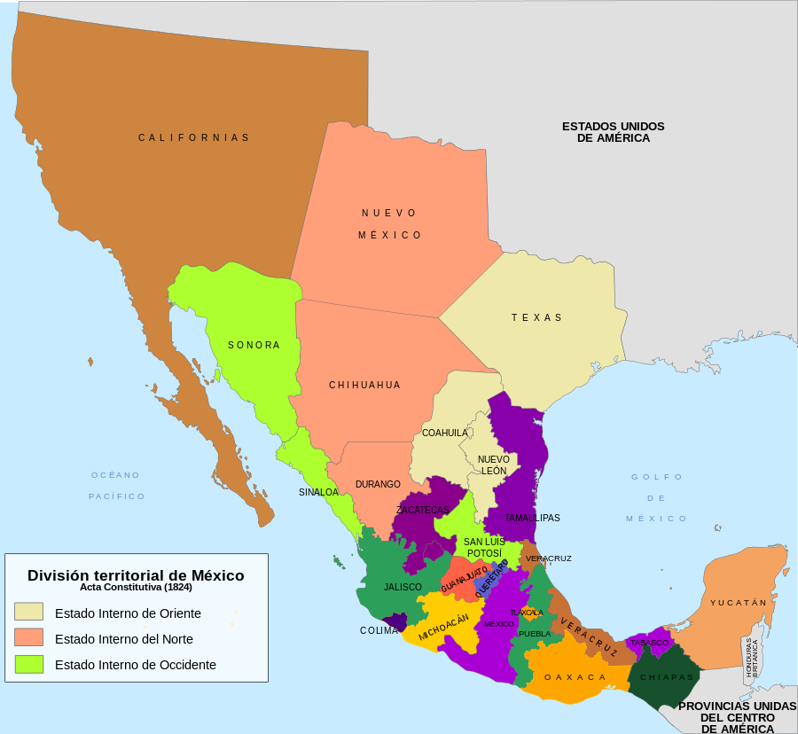
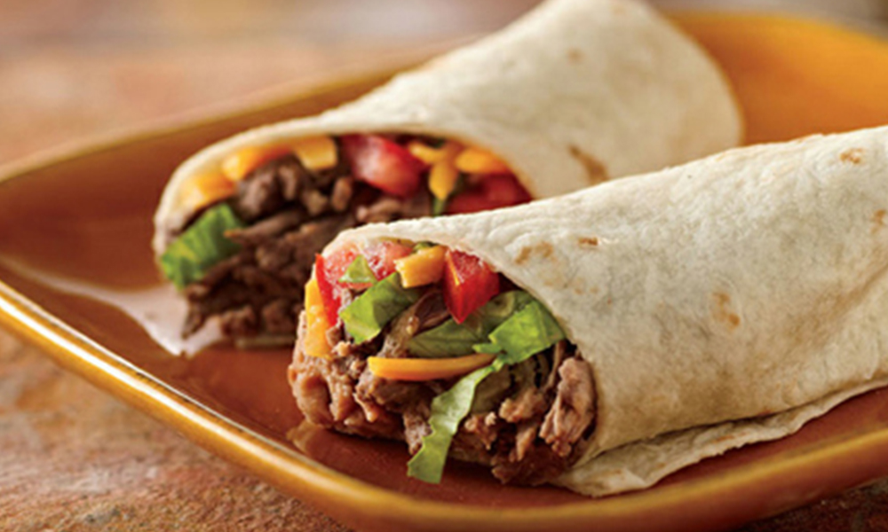

CHIHUAHUA
Chihuahua, oficialmente Estado Libre y Soberano de Chihuahua, es uno de los treinta y un estados que, junto con la Ciudad de México, conforman México. Su capital es la ciudad homónima y su ciudad más poblada es Ciudad Juárez.
Está ubicado en la región noroeste del país, limitando al norte con los estados de Nuevo México y Texas (Estados Unidos) (donde la mayor parte de esta extensa frontera está delimitada por el río Bravo), y colinda con otros estados de México, al este con Coahuila, al sur con Durango, al suroeste con Sinaloa y al oeste con Sonora. Con 247 455 km² es el estado más extenso y con 13,77 hab/km², el tercero menos densamente poblado, por delante de Durango y Baja California Sur, el menos densamente poblado. Fue fundado el 6 de julio de 1824. Se divide en 67 municipios.
Su capital es Chihuahua. Otras localidades importantes son Ciudad Juárez, Cuauhtémoc, Delicias, Parral, Nuevo Casas Grandes, Camargo, Jiménez, Ojinaga, Meoqui, Aldama, Guachochi y Madera.
TOPONIMIA
El origen de la palabra Chihuahua es muy discutido por historiadores y lingüistas. Existen cinco acepciones conocidas, por las que se expone que este nombre proviene de lenguas como el náhuatl y el rarámuri, del cual se traduce como "lugar donde se juntan las aguas de los ríos" o "lugar de fábricas", o antiguas lenguas regionales, como el concho. Uno de los posibles orígenes más conocidos es el náhuatl Xicahua, que significa "lugar seco y arenoso", pero no existe acuerdo universal sobre esta hipótesis.

HISTORIA
La primera evidencia de cultura en el estado son los sitios de Samalayuca y Rancho Colorado en el noroeste del estado, donde se han encontrado puntas de flecha con características peculiares que permiten datarlas en el período Paleoindio aproximadamente entre 1000 y 7000 A. C.
Hay evidencia de que los pobladores de esta parte de América continuaron solo como cazadores-recolectores al menos hasta 2000 a. C. Esta etapa se caracteriza por los inicios de la domesticación del maíz. Poco después de 2000 a. C. se identifican cultivos de calabaza. Entre los primeros sitios con irrigación agricultura de terrazas se incluye el Cerro Juanaqueña en el norte de Chihuahua, (aproximadamente entre 1300 y 1100 a. C.). El inicio de la cerámica aparece entre 1 y 400.
CASAS GRANDES Y CAZADORES-RECOLECTORES
Norte y la Sierra de Chihuahua (300-1300): Durante la época Precolombina el territorio de Chihuahua estuvo ocupado por diferentes culturas, algunas alcanzando cierto desarrollo urbano y comercial. Notables de este período son la Cultura de Casas Grandes (300 a. C. - 1400), relacionada con las Culturas Anasazi y Mogollón establecidas más al norte. La misma cultura dejó varias muestras en el estado como Cuarenta Casas y Paquimé propiamente dicha. La evidencia sugiere que se dedicaron al comercio, agricultura y la caza. Los Constructores originales de estos establecimientos no eran los que encontraron los españoles el siglo XVI. La declinación de los principales centros mogollones (de los que la Cultura de Paquimé formaba parte) comenzó en el siglo XIII, antes del apogeo paquimense. Para el siglo xv algunos grupos que poblaban las ciudades asociadas a la Cultura de Paquimé se refugiaron en la Sierra Madre Occidental, otros huyeron al norte, donde se unieron a los anasazis. Se supone que los grupos taracahítas actuales (yaquis, mayos, ópatas, tarahumaras) son al parecer descendientes de los mogollones. (Ver Oasisamérica).
El Este de Chihuahua (300-1300): durante el mismo período, un poco hacia el Oeste de Texas y Este de Chihuahua, los Jornado-Mogollón se dedicaban a la caza del bisonte (o búfalo), dejando pinturas rupestres al norte del Río Bravo en Hueco Tanks, Texas. Sin embargo, nunca desarrollaron una cultura tan avanzada como los vecinos de Cultura de Paquimé. Hacia el 1300 ya habían desaparecido. Al parecer los sumas y mansos que encontraron los exploradores europeos eran sus descendientes. Otros ocupantes no dejaron huellas tan impresionantes sino algunas pinturas rupestres en algunos lugares del estado.
El sur (300-1300): esta zona es clasificada como parte de Aridoamérica, donde las tribus chichimecas son las ocupantes del lugar, estas evolucionaron en los actuales tepehuanes. Eran cazadores, recolectores y agricultores.
COLAPSO DE 1300
En algún momento entre 1300 y 1400, las culturas de más al norte, los anasazi y mogollón colapsaron en el área de los actuales Arizona y Nuevo México. No hay una explicación clara de lo ocurrido, sin embargo al final de esa etapa los emplazamientos anasazis estaban abandonados y la mayoría de los asentamientos mogollón en Chihuahua y Nuevo México estaban ocupados por etnias diferentes a los constructores de estos sitios. Se cree que los actuales indígenas pueblo, incluyendo los tiguas son sus descendientes (de los anasazi). Los descendientes de los indígenas pueblo preservaron a cultura semi-urbana y construyeron nuevos asentamientos, como los tigua, que aún permanecen en el área de El Paso, Texas, y recibieron a los españoles cuando arribaron a la región. Los mogollón parecen haber emigrado hacia el suroeste y centro de Chihuahua, sin haber conservado totalmente su compleja cultura. Al mismo tiempo, diversos grupos tribales de cazadores-recolectores ocupaban la mitad Oriental del estado, principalmente los Conchos, Tobosos o Túbares y otros menores (sumas, mansos, jumanos, pescado, coahuiltecas, julimes, guazapares, chínipas, cocoyomes, chonchos, huites, janos, jococames, jovas, témoris, xiximes). Mientras en el área central y de la Sierra madre Occidental se cree que el principal grupo posterior a la Cultura Paquimé (mogollón) evolucionó en el de los Tarahumaras y otras etnias ahora fuera del estado (pimas y yaquis). Algunos como los tepehuanes y pimas también tenían poblaciones importantes, siendo todos al parecer sociedades con comunidades muy aisladas, y no tan desarrolladas como las constructoras del Noroeste, sumamente agresivas.
EL CONTACTO CON LOS ESPAÑOLES
Es muy revelador el hecho de que la mayor parte de las expediciones dirigidas hacia Nuevo México lo hacían más por el lado de Sonora que por el de Durango y Chihuahua. Es posible que el terreno y la hostilidad de los primeros ocupantes de la región hayan sido la razón, pero los de Sonora no eran más amistosos. El caso es que las etnias del lugar eran difíciles de contactar y muy repartidas en el territorio. Al sur del actual Chihuahua se hallaban los tepehuanes. En la región de Santa Bárbara y hacia el norte en el valle del Río Conchos, la conchería (los propios conchos y los sumas y jumanos, en un primer momento los que establecieron contacto). Casi todos estos grupos (y otros que no se distinguían con un nombre claro, pues en diversos momentos los mismos grupos eran nombrados de formas diferentes o parecidas a los asignados por otros exploradores), eran lo que los españoles llamaban gente de las rancherías, pues su población se hallaba ampliamente distribuida sin que sus casas estuvieran necesariamente contiguas, sino separadas por grandes distancias (algunos kilómetros en algunos casos). Este es aún el caso de los tarahumaras. La estimación de población indígena de la Nueva Vizcaya es de 350.000 habitantes. Pero es solo una estimación, e incluye los actuales Chihuahua y Durango.

TEPEHUANES
En la zona de Santa Bárbara inicialmente se situaban los tepehuanes. Estos se extendían por todo el actual estado de Durango y el sur de la Sierra Madre Occidental. Poseedores de una agricultura incipiente de calabaza, maíz, frijol, chile y algodón. Al parecer en guerra constante con los tarahumaras a los que esclavizaban, y también dominaban a los acaxees de la sierra entre Durango y Sinaloa. Con una estructura religiosa compleja, practicaban la poligamia y al parecer el canibalismo. Eran gobernados por caciques, hoy en día llamados gobernadores indígenas.
CONCHOS
Más precisamente, la conchería, que incluía a los conchos, pero también a los grupos en los valles de los ríos Conchos, Florido y San Pedro, y más al norte de la confluencia con el Río Bravo. Incluía a los chinarras, chisos y tapacolmes. También era gente de ranchería, que en pocas ocasiones vivían en asentamientos contiguos. Cazadores de conejos, ratas, bisontes, venados, y berrendos. Ellos habitaban en zonas de los municipios más al norte.
RARÁMURIS
Los rarámuris ocupaban la zona al norte de Santa Catarina, hasta el sur del la Sierra Madre Occidental. Ya tenían cierto grado de desarrollo agrícola y eran también cazadores-recolectores. En aquella época (como en la actualidad), eran el ejemplo típico de gente de la ranchería. En las zonas limítrofes con los tepehuanes permanecían al parecer en cierto grado de conflicto, y en algunos casos eran esclavizados por ellos. Cada ranchería o región era gobernada por un cacique.
TOBOSOS
Los tobosos parecen haber sido parte de los grupos chichimecas, viviendo más hacia el este del Río Conchos, hasta el área conocida como el Bolsón de Mapimí, también es uno de los más grandes grupos indígenas de Chihuahua.
EXPLORACIONES ESPAÑOLAS
Es generalmente aceptado que el primer europeo en llegar al área de Chihuahua fue Álvar Núñez Cabeza de Vaca entre 1528 y 1536, quien naufragó en Florida con la expedición de Pánfilo de Narváez, llegó a las costas de Luisiana y acto seguido esclavizado por los indígenas de la zona. Más tarde huyó hacia el Este, cruzó el río Bravo y se internó en el desierto al este de Chihuahua. Ahí tuvo contacto con conchos y tarahumaras, que lo guiaron hacia la ruta del mar de Cortés.
Al mismo tiempo, la expedición de Nuño de Guzmán (1529-1531) sentaba las bases para la colonización desde el Sur, conquistando los actuales espacios de Michoacán, Sinaloa, Jalisco, y Zacatecas. Al principio la colonización se dirigía desde Ciudad de México. Sin embargo en 1549 se creó la real audiencia de Nueva Galicia en la villa de Santiago de Galicia de Compostela de Indias y que en 1560 se la trasladara a la ciudad de Guadalajara, por lo que cambió su nombre a Real Audiencia de Guadalajara. Desde ahí se dirigirían los esfuerzos para conquistar el norte de México. Las principales exploraciones fueron las de:
Francisco de Ibarra en 1562 y 1566 (en el curso de las cuales se encontró con Paquimé o Casas Grandes y fundó Durango en 1563, base de posteriores exploraciones desde el sur). Uno de sus soldados (Rodrigo de Río de Loza) fundó Santa Bárbara en 1564. Durante este período inicial, esta zona se conoce como la Nueva Vizcaya incluyendo el territorio de Durango. Es desde Durango desde donde parten las primeras exploraciones. El objetivo de los exploradores eran las míticas ciudades de oro de Cíbola y Quivira, mito afianzado por las historias de fray Agustín Rodríguez. (Aunque el primer establecimiento permanente ocurrió en 1564 en Santa Bárbara, recientemente el historiador Héctor Arras parece tener documentación que sugiere un establecimiento anterior en Parral por misioneros franciscanos, no hay sin embargo ningún consenso al respecto, incluso entre los historiadores.)
Diversos misioneros franciscanos, algunos de los cuales fundan Valle de San Bartolomé (hoy Valle de Allende) en 1569, provenientes unos de la costa de Sinaloa y otros desde Durango, entre ellos el primer misionero en la región parece haber sido fray Agustín Rodríguez quien predicó en el estado a los indígenas en 1581 (ver ref. 1581).
Francisco Sánchez «El Chamuscado» en 1581. Quien salió a buscar las Siete Ciudades de Oro por instigación de fray Agustín Rodríguez, saliendo de Santa Bárbara y falleciendo poco antes de regresar ahí en 1582. El propósito original de esta expedición era la evangelización por los franciscanos.
Antonio de Espejo en 10 de noviembre de 1582. Saliendo de Valle de Allende, entonces San Bartolomé para explorar Nuevo México.
Gaspar Castaño de Sosa 1595, que siguió el río Bravo desde la actual Monclova, aunque es más probable que se haya dirigido al norte por el río Pecos.
Antonio Gutiérrez de Umaña y Francisco Leyba de Bonilla (1590).[cita requerida] Desde Santa Bárbara para explorar Nuevo México. 1594 Una expedición no autorizada hacia el Norte, es posible que pasara por el río Bravo, llegara hasta Nuevo México y los actuales Arkansas y Kansas. Casi toda esta expedición es conocida por un náhuatl sobreviviente que relató el fin de la historia, el indígena fue encontrado en 1598 por miembros de la expedición de Oñate, refugiado entre los indígenas pueblo en Nuevo México.
Vicente de Zaldívar en 1588. Para encontrar un camino más directo a Paso del Norte desde Santa Bárbara, en preparación de la expedición de Oñate. Las expediciones anteriores habían seguido el río Conchos hasta La Junta con el río Bravo y de ahí este último hacia el norte.
Juan de Oñate en abril de 1598, cruzando el Río Bravo en Paso del Norte, creando el Camino Real al fundar Santa Juana en Nuevo México y recorrer la ruta de regreso hacia Ciudad de México. Llevaba consigo 30 familias para colonizar Nuevo México.
Marqués de Rubí con Nicolás de la Fora y José Urrutia en 1766 para definir las fronteras del norte.

LABOR DE LOS MISIONEROS
Los primeros en llegar al estado son, como se mencionó, los misioneros franciscanos, que habían llegado a la Nueva España desde el inicio de la conquista en 1524. Desde Valle de San Bartolomé en 1574, iniciaron la evangelización de la población indígena, Siendo los primeros parecen haberse especializado en los conchos y chinarras, siguiendo principalmente las zonas comunicadas por las primeras rutas (Camino Real de Tierra Adentro) entre Nuevo México y Durango.
En 1604 fundaron la Misión de San Francisco de Conchos (con Atotonilco como pueblo de visita), en 1607 la Misión del Tizonazo, cercana a la Misión de Indé (esta última en Durango). no es clara la razón por la cual, a pesar de tener contacto durante décadas con los tarahumaras, no tuvieron mucho éxito evangelizándolos.
Los misioneros jesuitas se repartieron por el centro y suroeste del territorio actual. A partir de 1591 desde Sinaloa, procedieron a fundar misiones entre los tepehuanes: Misión de Santiago Papasquiaro en 1599, Misión de Santa Catalina, Misión de El Zape, Misión de Guanaceví, todas en el actual Durango, para de ahí avanzar entre los tarahumaras. Pronto la competencia entre ambas órdenes se inició un reparto de facto. Este se reafirmó con conflictos como el de 1677 en Yepómera, donde habitaban conchos y tarahumaras en ambas riberas del río. Los líderes de ambas órdenes en la región (provinciales), que asignaron a los jesuitas la Sierra Madre hasta Yepómera, y al este hasta la junta del río San Pedro y el río San Lorenzo. Quedando la parte llana a los franciscanos. Los jesuitas se dedicaron primero a establecer una relación de confianza con los habitantes, aprendiendo sus lenguas, y formando la jerarquía social entre los tarahumaras: siriame-gobernador, kapitani-capitán, jenerari-generales, biskari-fiscales. Dicha estructura subsiste aún.
El primer misionero jesuita entre los tarahumaras fue el padre Joan Font, en 1604. Fundando la Misión de San Pablo de Tepehuanes (Balleza). La intención era la de eliminar el conflicto entre tepehuanes y tarahumaras. Sin embargo, está se abandonó con el inicio de la Primera Rebelión Tepehuana en 1616. Al final de esta, se funda la San Miguel de las Bocas en 1630, primera entre los tarahumaras. Luego la de Misión de San Felipe en 1639 y la Misión de San Ignacio. Toda la expansión se detuvo con la Rebelión Tarahumara de 1646, la Rebelión de Guazapares de 1632 y al Rebelión de la Confederación de Siete Naciones en 1644.
Muy posteriormente, hacia 1748 se establecen los pueblos de misión de Santa Inés de Chínipas, Santa Teresa de Guazapares, San Javier Cerocahui, y Purísima Concepción de Tubares. Todas estas fundaciones se vieron interrumpidas por las diversas rebeliones. No es clara la razón de las continuas rebeliones, pero una causal posible es el inicio del proceso de reducción, que daba lugar al establecimiento de pueblos. A partir de la fundación de estos, la autoridad civil virreinal de la Nueva España ejercía de inmediato un poder mucho mayor sobre los indígenas.
REBELIÓN DE 1680
En 1680 los colonizadores de Santa Fe, Nuevo México se refugiaban en Paso del Norte, huyendo de los indígenas Pueblo quienes habían tomado la ciudad, permaneciendo ahí doce años hasta que la expedición de Diego de Vargas reconquistó la zona en 1692.
COMANDANCIA GENERAL DE LAS PROVINCIAS INTERNAS
El septentrión de la Nueva España era considerado un lugar muy rico pero mal administrado, por ello, el rey de España Carlos III creó la comandancía general de las provincias internas, que no era otra cosa más que un territorio gobernado por un capitán general. En ese momento la nueva Vizcaya se separó del Virreinato de la Nueva España. La capitanía género se creó en 1763, al principio ocupaba las entonces intendencias de Nueva California, Vieja California, Sonora y Sinaloa, Nueva Vizcaya, Nuevo León, Coahuila, Santander, y los territorios de Nuevo México y Texas. Su primera capital fue Arizpe, en la intendencia de Sonora y Sinaloa, pero luego fue movida a la villa de san Felipe el real de Chihuahua, en la intendencia de Nueva Vizcaya. La capitanía de las provincias internas dura hasta 1813, cuando por órdenes del virrey José María Calleja la comandancia es anexada de nuevo a la Nueva España.
ESTADO INTERNO DEL NORTE
Poco después de la Independencia los federalistas se levantaron contra Iturbide. Chihuahua se unió a la lucha, después de un incidente sin gran importancia en Janos. En Durango se tomaron medidas en un principio contra el movimiento, pero el 5 de marzo de 1823 las tropas se declararon a favor de este, así como la mayoría del pueblo. El Comandante General Cordero dimitió, al igual que hizo el general de brigada I. del Corral, gobernador civil y militar en Durango, con lo cual la diputación provincial declaró sucesor a Juan Navarro como intendente, y a Gaspar de Ochoa, coronel de la guarnición, como comandante en lugar de Cordero.

GEOGRAFÍA
OROGRAFÍA
El estado de Chihuahua está conformado por tres grandes regiones denominadas Sierra, Llanura o Meseta y Desierto, que suceden de oeste a este en forma de grandes bandas. Esto le da al clima y la geografía condiciones inmensamente contrastantes y le dan al estado sus imágenes más conocidas: sus grandes desiertos, montañas, cañones y bosques.
SIERRA
La Sierra de Chihuahua está conformada por la zona más septentrional de la Sierra Madre Occidental, que en el territorio alcanza su mayor altura en el Cerro Mohinora, con 3 333 msnm. Comprende un tercio de la superficie del estado y es una zona muy accidentada de grandes montañas y barrancas o cañones aún más grande que el Cañón del Colorado en Estados Unidos, está cubierta de espesos bosques de coníferas, a excepción del fondo de las barrancas, que debido a la poca altitud tienen un clima y vegetación tropical durante el verano y clima templado durante el invierno. Las temperaturas en el fondo de las barrancas pueden superar los 40 °C en verano y muy rara vez caen a menos 0 °C en el invierno, mientras que en las partes altas el clima es semifrío con máximas que rara vez superan los 30 °C en verano y que pueden llegar a caer por debajo de los -20 °C en el invierno. La precipitación promedio anual de esta zona varía entre los 750-900 mm anuales, agrupadas principalmente en los meses de mayo a septiembre. En los meses de noviembre a marzo es usual que se registren nevadas que varían en intensidad según la altitud. Es una zona de gran riqueza maderera y minera, habitada por los grupos indígenas del estado, que son unos de sus principales atractivos turísticos. En la Sierra se encuentran la Barranca del Cobre y la Cascada de Basaseachi, ambos lugares turísticos de fama nacional y mundial.
LLANURA
La meseta es una zona de transición entre la sierra y el desierto. Es la extensión más al norte de la Altiplanicie Mexicana que comienza desde El Bajío. Es una estepa donde su vegetación depende de las lluvias estacionales. Durante esta temporada reverdecen pastos, forrajes y pequeños arbustos, que durante las sequías se consumen. Las precipitaciones son más escasas que en la sierra, registrándose 400 mm de lluvia en promedio al año, agrupadas en los meses de verano (julio, agosto y septiembre). Las temperaturas son extremosas pudiendo alcanzar los 40 °C en el verano y llegando incluso a los -15 °C en el invierno, las nevadas son esporádicas en los meses de noviembre a marzo. En esta zona se lleva a cabo agricultura de temporal, pero también existen importantes desarrollos de agricultura de riego, con ayuda de los ríos y presas. Se encuentra atravesada por varias serranías, aunque su terreno es mayoritariamente plano. En la meseta se encuentra la principal zona agrícola y ganadera del estado, así como el asentamiento de la mayoría de la población y sus principales ciudades.
DESIERTO
El desierto constituye una tercera parte del territorio chihuahuense. Es la prolongación en el estado del Bolsón de Mapimí y forma parte del gran bioma norteamericano denominado Desierto de Chihuahua por estar en su mayor parte en territorio del estado y que se extiende tanto al vecino estado de Coahuila como al norte, a los Estados Unidos. Es una gran cuenca endorreica donde las corrientes de agua no tienen salida y son consumidas por evaporación. Su territorio es mayoritariamente plano, aunque tiene serranías de baja altura que lo cruzan, casi todas ellas en sentido norte-sur. El clima de esta zona es muy seco, las precipitaciones rara vez superan los 250 mm anuales, las temperaturas llegan a superar los 40 °C durante el verano y en invierno suele haber heladas, aunque no tan intensas como en la zona serrana, la caída de nieve también se da en esta región aunque es menos frecuente. En Villa Ahumada se dio la temperatura más baja registrada en Chihuahua, de -30,4 °C en enero de 1962. Las dunas de Samaluyca son un gran atractivo de esta zona, ubicadas al sur de Ciudad Juárez.Es la única región de México en que se puede disfrutar este atractivo, ya que este inmenso arenal cubre más de 150 km².
FLORA Y FAUNA
Chihuahua se distingue por su fauna tipo ártica, que es prácticamente la misma fauna que posee el resto de América del Norte. Así, en este estado del norte de México se pueden encontrar animales como el oso negro, el coyote, el águila calva, el venado de cola blanca, el bisonte americano, el muflón canadiense o el berrendo entre otros. El lobo mexicano casi desapareció en el estado de Chihuahua durante el siglo XX, aunque por suerte grupos de protección a la fauna local lograron reproducir y reintroducir al lobo mexicano a su hábitat natural en acuerdos con los rancheros y autoridades del estado. El puma, o león de montaña parece frecuentar las sierras de pino-encino. En altos bosques de la Sierra Madre Occidental se encuentra una especie rara de abeto, llamado Abies durangensis, crece en los municipios colindantes con Sinaloa y Durango. Un rumor que podría ser una luz de esperanza podría ser la todavía existencia del oso plateado mexicano o oso gris mexicano una subespecie de oso gris la cual se creía extinta pero ha llegado a creerce que aun podría seguir con vida el la región montañosa de la sierra madre donde se cree que se le ha avistado en lugares como el cerro de la campana y en santa clara y el nido,a lo que solo se puede esperar que esto llegue a ser cierto a favor de la fauna mexicana y del estado. En México se realizó la mayor matanza de bisontes en varios periodos históricos hasta lograr su extinción en el territorio nacional. En 2002, el gobierno de los Estados Unidos donó crías y algunos ejemplares jóvenes al gobierno mexicano para reintroducirlos a la vida salvaje en las reservas naturales del cañón de Santa Helena y Boquillas del Carmen, que se ubican en las riberas sureñas del Río Bravo y los pastizales fronterizos con Nuevo México en el municipio de Janos. Se ha reintroducido oficialmente en noviembre de 2009 al bisonte americano en las planicies del norte de México, esperando una pronta recuperación de la especie donde solía pastar en siglos anteriores dentro de la Reserva de la biosfera El Uno. El establecimiento de cercos para delimitar las divisiones internacionales o en pequeñas propiedades ha frenado las migraciones naturales interregionales de esta especie.
OSO NEGRO
El oso negro americano (Ursus americanus), también llamado oso negro, es una especie de mamífero carnívoro de la familia de los úrsidos. Es el oso más común en Norteamérica. Es más pequeño que el oso pardo y el oso polar, presentando un color de piel más o menos oscuro (según las regiones y va del negro al blanco, pasando por el rojizo y el gris plateado). Tiene cuerpo robusto, cola corta, orejas pequeñas y redondas. Su pelo oscuro es corto y lacio. El perfil del rostro es recto con hocico largo. Sus garras cortas (menos de 50 mm) son negras y ganchudas. En distancias pequeñas puede alcanzar hasta 40 km/h. El macho llega a medir 2.87 m de longitud y la hembra 2.55 m. El peso corporal va de los 60-280 kg para machos y 40-180 kg hembras.
En general, se reconocen 16 subespecies, algunas amenazadas. Este oso habita una superficie geográfica que va desde el norte de Canadá y Alaska hasta alcanzar sus áreas más meridionales en mesetas del centro de México, en la Sierra Gorda de Querétaro, Guanajuato e Hidalgo; y de las costas atlánticas a las costas pacíficas de Norteamérica. Está presente en gran número de estados estadounidenses, en todas las provincias canadienses y áreas agrestes de las sierras norteñas mexicanas.
En México, es uno de los carnívoros de mayor tamaño; se reconocen tres subespecies (U. a. amblyceps, U. a. machetes y U. a. eremicus). Se encuentra en Chihuahua y Sonora (U. a. amblyceps); así como en Coahuila, Tamaulipas y Nuevo León (U. a. eremicus). De acuerdo a la ficha técnica de Enciclovida, la distribución reportada en la literatura para el oso negro también incluye a los estados de Sinaloa, Nayarit, Jalisco, Durango, Zacatecas y San Luis Potosí.
Prefiere habitar los bosques y las montañas donde encuentra su comida y puede ocultarse. Su población era hace tiempo, seguramente, de dos millones de individuos. En la actualidad, la especie está protegida y se considera que existen entre 500 mil y 750 mil osos negros en ese continente. La subespecie de Nuevo León, México se considera en Peligro de Extinción.
En México, se le encuentra en las zonas montañosas del norte del país, principalmente cañadas y cumbres cubiertas por bosques de pino-encino. En primavera y verano llega a bajar a los pastizales áridos de las faldas de las sierras. Habita entre los 650 y 3,000 msnm y en regiones con diversos climas como son el seco semiárido, seco árido, templado, húmedo o lluvioso tropical. En México la NOM-059-SEMARNAT-2010 considera a Ursus americanus En Peligro de Extinción; la IUCN 2019-1 como una especie de Preocupación menor. La cacería furtiva y comercio ilegal representan las mayores amenazas a la especie dado el alto precio en el mercado por la caza y venta de partes. Durante mucho tiempo cazado por su piel, hoy sufre la reducción de su medio natural; la urbanización del norte del país ha restringido su movimiento al fragmentar su hábitat. Además, la construcción del muro fronterizo entre México y E.U.A. limitará el flujo génico entre las poblaciones del norte, cuyo movimiento hasta la fecha había logrado restablecer la población de oso negro en el Big Bend National Park en Texas.
El oso negro no hiberna en sentido estricto, sino que pasa el invierno en un estado de somnolencia, viviendo de las reservas de grasa acumuladas durante el otoño. Es omnívoro, aunque su régimen alimentario es en mayor parte vegetal. Contrariamente a los prejuicios, el oso negro es un buen nadador y trepa fácilmente a los árboles para escapar de un peligro.
En México, el oso negro juega un papel clave en el control poblacional de herbívoros y en la dispersión y germinación de semillas de los frutos que consume. Es imperativo hacer un proyecto a nivel nacional para identificar la distribución actual y el estado de sus poblaciones; así, se podrán establecer medidas apropiadas para su conservación a mediano y largo plazo.
BÚFALO
El bisonte americano (Bison bison), también denominado búfalo, y —palabra en desuso— cíbolo, es una especie de gran mamífero artiodáctilo de la familia de los bóvidos (Bovidae). Poblaba las planicies de toda Norteamérica, desde el norte de México, interior de Estados Unidos y Canadá, en grandes manadas, encontrándose desde el Gran Lago del Esclavo hasta el Desierto de Chihuahua, y desde el este de Oregón hasta los Apalaches. En referencia a esta especie, el término «búfalo», que data de 1635, tiene más historia que el concepto «bisonte», registrado en 1774; por ello, en idioma inglés es utilizado el primer término de manera errónea.
Se ha reintroducido el bisonte americano en las planicies del norte de México, esperando una pronta recuperación de la especie donde pastaba en siglos anteriores.
ÁGUILA REAL
El águila real (Aquila chrysaetos, del latín aquila, "águila" y del griego χρυσός, "dorado" y ἀετός, "águila") es una especie de ave accipitriforme de la familia Accipitridae. Es una de las aves de presa más conocidas y ampliamente distribuidas de la Tierra. Su área de distribución abarca gran parte de América del Norte, Eurasia y el norte de África. Mantiene poblaciones sedentarias incluso en varias islas como Gran Bretaña, las del Mediterráneo y Japón. Sin embargo, su población en Europa central se ha visto muy reducida en los últimos años por culpa de la actividad humana y se ha extinguido en muchos lugares donde antes era abundante.
GUAJOLOTE
El pavo salvaje (Meleagris gallopavo), también conocido como guajolote, gallipavo, guajolote norteño, pisca, chompipe, guanajo, totole, cocono, o simplemente pavo, es una especie de ave galliforme de la familia Phasianidae (guajolotes, codornices, perdices, y faisanes). Es originario de México, pero se ha introducido como ave doméstica en casi todo el mundo. Su nombre originario en lengua náhuatl es huey xolotl (literalmente "gran criado"), de lo cual deriva su denominación popular como "guajolote". Su población al momento de la llegada de los europeos se calcula en cuarenta millones de ejemplares, siendo fuertemente cazada o domesticada. En la actualidad se estima que hay cuatro millones en estado salvaje y muchos millones más en estado doméstico.
Su coloración es generalmente café oscura con reflejos verde metálico o bronceados. Los machos poseen plumas iridiscentes color rojo, verde, cobre, bronce y dorado. Las hembras son color gris o café. No posee plumas en cabeza y cuello, pero sí carúnculas rojizas, púrpura y azul. Posee una papada rojiza y una formación carnosa colgante que crece en la base del pico. Se distribuye en América del Norte, desde el sur de Ontario, Canadá, hasta el sur de México. En México se le ha registrado en veinticuatro estados del país (las excepciones son Baja California, Baja California Sur, Estado de México, Ciudad de México, Morelos, Tabasco, Campeche y Yucatán).
Habita principalmente bosque de pino-encino, también puede encontrarse en matorral xerófilo o en bosque de coníferas, de encino o mesófilo. Si bien en México la NOM-059-SEMARNAT-2001 clasificaba a la especie como "Sujeta a protección especial", en la NOM-059-SEMARNAT-2010 aparece como "No evaluada"; la UICN 2019-1 la considera como de Preocupación menor. Sus poblaciones son disminuidas por la explotación forestal, por el impacto de las actividades humanas y porque es muy susceptible a contraer enfermedades. La tendencia poblacional del guajolote silvestre parece ser que va en aumento, por lo cual no se encuentra en una categoría más alta, según la UICN. En México, es de gran importancia cinegética y está considerada como especie de caza limitada (se emite un permiso que autoriza la cacería de solo un ejemplar por temporada). La especie se ve afectada por el comercio ilícito nacional.
En muchos países, este pavo es apreciado por su carne, y su variante doméstica es una popular ave de corral.
LOBO MEXICANO
El lobo mexicano (Canis lupus baileyi) es una de las cinco subespecies de lobo gris que habitan en Norteamérica. Es también la más pequeña de las subespecies, alcanzando una longitud no mayor de 135 cm y una altura máxima de 80 cm, aproximadamente. Los pesos varían desde los 27 kg hasta los 45 kg. Conservación del lobo gris mexicano avanza positivamente: UNAM. A finales de la década de los 70, el lobo gris mexicano (canis lupus baileyi) fue declarado en peligro de extinción. Para ese momento se estimaba que apenas había 50 ejemplares en todo México.
ARCE PLATEADO
El arce de azúcar, arce del Canadá, arce sacarino, arce plateado o arce blanco americano (Acer saccharinum), es una especie botánica de arce nativa del este de EE. UU. y áreas adyacentes del sudeste de Canadá. Es, relativamente, de rápido crecimiento. Se lo ubica a lo largo de vías de agua y humedales. Es uno de los más comunes árboles de EE. UU. Es altamente adaptable, aunque tienen más altos requerimientos de luz solar que otros arces. Etimología de saccharinum, del latín saccharinus-a-um, azucarado, referido al jugo azucarado que se obtiene de su savia.
NOPAL
Opuntia ficus-indica, comúnmente conocida, entre otros nombres, como nopal, higuera (de pala), palera, penca, tuna, chumbera, es una especie arbustiva del género Opuntia de la familia de las cactáceas.
Originaria del continente americano, fue introducida en Europa por los conquistadores españoles para aprovechar suelos poco productivos del sur de la península ibérica, y de allí pasaron a Italia –donde existió una pequeña industria ligada a ellas–, y al norte de África.
ASIENTO DE SUEGRA
Echinocactus grusonii, llamado comúnmente asiento de suegra, bola de oro, barril de oro, o cactus erizo, es una especie perteneciente a la familia Cactaceae. El pequeño género al que pertenece, Echinocactus, junto con su género pariente Ferocactus, son vulgarmente conocidos como cactus barril.
Es endémico del centro de México, desde Tamaulipas hasta el Estado de Hidalgo, y a pesar de ser uno de los cactus más populares en cultivo, se considera raro y está catalogado como especie en peligro de extinción en su hábitat en estado salvaje.
CARDÓN
Cylindropuntia imbricata), llamado comúnmente cardenche, también entraña o cardón, es un arbusto nativo de México que pertenece a la familia Cactaceae. Su tallo cilíndrico puede alcanzar hasta 3 m. En México se distribuye en la parte central del norte, el Altiplano, el Bajío hasta llegar a Puebla. En la actualidad está protegida del Comercio Internacional de la convención CITES (Apéndice II).
POBLACIÓN
Según el Censo de Población y Vivienda llevado a cabo por el Instituto Nacional de Estadística y Geografía (INEGI) con fecha censal del 27 de marzo de 2020, el total de población del estado de Chihuahua es de 3 741 869 habitantes, lo cual le da el 11° lugar entre las entidades federativas de México por población. De este total poblacional, 1 853 822 son hombres y 1,888,047 son mujeres. La tasa de crecimiento anual para la entidad durante el período 2005-2010 fue del 1.0%. La edad promedio de la población es de 29 años.
En el período de 2000 a 2005 se calcula que emigraron hacia Estados Unidos 49,722 personas. El estado tuvo una inmigración de 82 000 personas entre 2000 y 2005 provenientes de Veracruz (17,6 %) Estados Unidos (16.2 %), Durango (13,2 %), Coahuila (8 %) y Chiapas (4,5 %). Se cree que la mayor parte de los cuales lo hicieron hacia Ciudad Juárez, donde hay una importante población de inmigrantes de centrado y Sudamérica que normalmente no son contabilizados en los Censos Federales por temor a ser deportados. La razón del movimiento poblacional hacia el estado, particularmente hacia Ciudad Juárez, es por las dificultades laborales que se tienen en los estados de origen de los migrantes, en cambio, Ciudad Juárez tiene una importante oferta de empleo, particularmente en el sector maquilador, así mismo llegan al estado muchas personas con la intención de buscar cruzar hacia Estados Unidos, muchas al no lograrlo permanecen en la franja fronteriza, donde muchos finalmente se establecen definitivamente.
Sin embargo la población de Chihuahua se encuentra repartida de forma muy dispar en el territorio, siendo uno de los estados con menos densidad poblacional, siendo en 2020 de 15.1 habitantes por km², de los 3 741 869 habitantes, casi dos terceras partes, 2.072.129, habitan únicamente en los municipios de Juárez y Chihuahua.
Tras las Ciudad Juárez y Chihuahua, únicamente otras tres poblaciones superan los cien mil habitantes, y son Cuauhtémoc con 135,586, Delicias con 128,548 habitantes y Parral con 113 843 habitantes.
GRUPOS ÉTNICOS
Los principales grupos étnicos del estado de Chihuahua son:
Indígenas:
Tarahumaras: son la principal etnia indígena del estado, se denominan a sí mismos como Rarámuri que significa "pie corredor" en su lengua nativa, lo cual hace referencia a su particular habilidad de correr grandes distancias. Habitan en amplios sectores de la Sierra Madre Occidental, a la que se da localmente el nombre de Sierra Tarahumara, sin embargo, la emigración por razones principalmente económicas han dado lugar a importantes asentamientos en otros sitios del estado, principalmente las ciudades de Chihuahua y Ciudad Juárez.
El significado exacto de la palabra "Rarámuri" es discutido en la actualidad, pues al hablar con integrantes de dicho grupo cultural, muchos niegan que signifique "Pie corredor" y dicen que significa "la gente", en contraposición a la palabra "chabochi" que hace referencia a los mestizos y al hombre blanco.
Según las creencias religiosas de dicho grupo, Onorúame (Dios), creó a los Rarámuri dándole a una figura de barro masculina tres soplidos para darle vida, soplidos que representan las tres almas que en su creencia poseen los varones y dando cuatro soplidos a una figura de barro femenina, proporcionándole cuatro almas (una más que los hombres, pues la mujer posee la posibilidad de parir). El hermano de Onorúame, pretendió imitarlo haciendo figurillas de cenizas, pero cuando sopló para darles vida, solamente lo hizo una vez creando así a los "chabochis" (mestizos y caucásicos), que dentro de sus creencias solamente poseen un alma.
Es por esto, que muchos creen que la palabra "chabochi" hace referencia a "los hijos del diablo", pero su significado exacto está diluido, pues muchos Rarámuris dicen que solamente significa "los de pelusa en la cara" (haciendo referencia a las barbas).
Tepehuanes del norte: denominados de esta manera para diferenciarlos de los Tepehuanes que habitan en el sur del estado de Durango, con los cuales tienen importantes diferencias, ellos mismos se dan el nombre de ódame, son el segundo grupo étnico del estado y habitan principalmente en el municipio de Guadalupe y Calvo, siendo su principal asentamiento Baborigame.
Guarijíos: grupo étnico diferenciado principalmente por su lengua, actualmente se encuentra algunos asentamientos únicamente en los municipios de Chínipas y Uruachi.
Pimas: son el menor grupo indígena del estado, sus principales asentamientos se encuentran en Temósachi, en algunas comunidades como El kipor, La Dura, en el municipio de Maicoba estado de Sonora, se denominan como O'odham para diferenciarlos de los pimas Tohono O'odham habitantes del estado estadounidense de Arizona. Se diferencian principalmente en la variante que de su lengua.
Inmigración Europea:
Menonitas: de 100,000 menonitas de origen alemán que viven en México, unos 90 000 están establecidos en Chihuahua; son el mayor grupo étnico no indígena del Estado. Pertenecen a una comunidad endogámica, muy religiosa, de origen germánico, que emigró desde la provincia canadiense de Manitoba tras perder sus privilegios en medio de una campaña germanofóbica durante la Primera Guerra Mundial y luego de ser invitados a México por el gobierno de Álvaro Obregón que cubrió los gastos de traslado. Son menonitas, seguidores de las creencias de Menno Simons, un líder del ala pacifista del movimiento anabaptista durante la Reforma Protestante. En 1922 se inició la inmigración con la llegada de 3 000 personas (que se establecieron en su totalidad en Chihuahua), y para 1927 ya se habían establecido 10 000 en México, repartidos entre los estados de Chihuahua, Durango, Campeche y Zacatecas.
Prácticamente la totalidad de la población (98 %) se ocupa de labores agrícolas, destacando la producción de cereales, frutales y hortalizas. Asimismo, dominan la conserva de frutos y vegetales y el embutido de carnes frías, saladas y ahumadas.
Mormones: son el menor grupo étnico no indígena del estado. Pertenecen a una comunidad religiosa endogámica que emigró desde Utah en los Estados Unidos.
CULTURA
GASTRONOMÍA
Chihuahua tiene una exquisita variedad de platillos y comida regionales, elaborada en base de carne de res la mayoría de ellos, pues aquí se cría ganado bovino de calidad, como el famoso cara blanca (Hereford) Brangus, Angus y Charolais; entre otros. Los cortes más finos deliciosos se sirven en los restaurantes acompañados de papa al horno y cebolla asada.
Debido a los climas extremos de la región los primeros pobladores se vieron en la necesidad de aprovechar los cortos períodos de cosecha para preservar y almacenar alimentos. Y es por ello que dentro de los usos y costumbres gastronómicos chihuahuenses está el deshidratar, a secar los granos, los vegetales, las frutas e incluso las carnes.
Entre sus platillos más tradicionales se encuentra el chile colorado con carne seca, la machaca a la mexicana o con huevo, el chile con asadero, chile pasado con carne o con queso, tortillas de harina, harinillas (pan hecho a base de maíz), la tradicional carne asada al carbón o los cortes de carne tipo americano, así como la deliciosa discada, orejones de frutas (frutas deshidratadas), orejones de calabacita con queso, queso ranchero, queso menonita, asadero, chorizo Camargo, así como también se puede disfrutar de deliciosos platillos de pescado fresco de las presas del Estado tales como son: el caldo de oso (caldo de bagre con verduras), mojarra frita o una deliciosa trucha arco iris al cilantro o a la mostaza o bien postres como pay de nuez y de manzana.
Otro patillo típico son los burritos, que han trascendido las fronteras. Son preparados con tortillas de harina y rellenos de carne de res o cerdo, frijoles o chile con queso. Entre otros guisados, con un sabor único que solo aquí se es posible encontrar. Destacan los burritos de Villa Ahumada, Los cuales son toda una tradición.
De Cuauhtémoc. Lo que más fama ha dado son los productos peculios de los campos menonitas ha sido su queso y otros lácteos como mantequilla y crema. Este queso menonita, también llamado queso Chihuahua, ha logrado un lugar importante en el consumo nacional e internacional.
Además Chihuahua huele a manzana, sabe a manzana y ofrece al visitante las mejores manzanas de México. En los fértiles valles que riega el río Papigochi, la primavera revienta en miles de flores que después se trasforman en exquisitas manzanas, dando origen a deliciosos platillos entre los que destaca el pay de manzana.

ARTESANÍAS
La Industria Maquiladora cuenta con 425 plantas en 25 parques industriales, que representan el 12.47 % de las plantas maquiladoras en México, y en las que se emplean 294 026 personas, el 24.35 % de los empleos de maquiladoras en México.
La agricultura chihuahuense sobresale en la producción de avena, papa y trigo, aunque pocas tierras disponen de agua para riego. Entre las cosechas más importantes de riego están las de trigo, algodón, maíz, sorgo, cacahuate, soya, alfalfa, chile verde y avena.
En las tierras de temporal destacan las cosechas de maíz, frijol, papa y avena. El estado de Chihuahua es famoso por las frutas que produce; La cosecha más abundante es la de manzana, que se produce en más de 30 variedades, siendo la más destacada la "red delicious". La sandía y el melón también representan una parte muy significativa de la producción. La carne de res de Chihuahua es famosa en todo el país. Esta fama se ha logrado gracias a las grandes extensiones de pastizales y matorrales con que se alimentan los animales. Asimismo, la producción de leche es importante ya que con ella se elaboran varios tipos de queso. También se crían puercos, cabras y carneros, aunque su producción no es tan importante como la de vacunos. Uno de los recursos económicos de más importancia en el estado es la silvicultura.
Entre la industria de artesanías de Chihuahua encontramos las textiles de lana, talabartería, cestería, trabajos en madera, juguetes e instrumentos musicales.
El total de población económicamente activa es 1,235,900 dividida en 812,166 hombres y 423,734 mujeres.
GOBERNADOR
Javier Corral Jurado (El Paso, Texas; 2 de agosto de 1966) es un político, abogado y periodista nacido en El Paso Texas,mexicano, miembro del Partido Acción Nacional. Fue Gobernador de Chihuahua en el periodo entre 2016 y 2021. También ha sido diputado al Congreso de Chihuahua, diputado federal y Senador de la República por el estado de Chihuahua.
Elegido en las elecciones de 2016 es el segundo gobernador de oposición en la historia moderna de Chihuahua. Durante su gobierno se llevó a cabo la denominada «Operación Justicia para Chihuahua» que consistió en la investigación, aprehensión y enjuiciamiento de su predecesor, el priista César Duarte Jáquez así como varios de sus colaboradores, y diversos actores políticos y sociales de Chihuahua y de México.
Como senador fue un duro crítico y detractor de la denominada «Ley Televisa» de 2006 así como de diversas disposiciones de la Reforma de Telecomunicaciones de 2013 promovida por el presidente Enrique Peña Nieto hechos que le significaron alrededor de diez años de veto en las principales televisoras privadas de México, entre ellas Televisa y TV Azteca.
Corral inició su carrera política cuando era un adolescente al acercarse al Partido Acción Nacional en 1982 después de una visita del candidato a la presidencia de la república por ese partido para las Elecciones federales de México de 1982, Pablo Emilio Madero a Ciudad Juárez en la que Corral lo conoció al ser reportero del Canal 44 de esa ciudad. Después de ocupar diversos cargos en gobiernos del PAN, dentro del partido mismo así como en el ámbito legislativo, se postuló sin éxito para gobernador de Chihuahua en las elecciones de 2004 como abanderado de los partidos Acción Nacional, de la Revolución Democrática y Convergencia.
Corral Jurado también ha sido profesor en la Universidad Nacional Autónoma de México institución que le otorgó el Premio Nacional de Derecho a la Información, por el Instituto de Investigaciones Jurídicas y ha escrito columnas para diversos medios entre ellos el diario El Universal.
TRAYECTORIA PERIODÍSTICA
Javier Corral se inició desde muy joven en los medios informativos de Ciudad Juárez. Incursionó en el periodismo a los once años de edad como fundador y creador de un periódico que llamó "El Chisme". En esa etapa recibió en la Casa Blanca el Premio Internacional de Periodismo de manos del Vicepresidente de los Estados Unidos de América, Walter Mondale.
Durante sus estudios de secundaria laboró como reportero para radio y televisión. Fue reportero y columnista político de El Fronterizo de Ciudad Juárez y del Diario de Juárez; jefe de información, coordinador editorial y subdirector del Norte de Ciudad Juárez. Es fundador de la revista Semanario y a los dieciséis años fungió como Secretario General de la Asociación Estatal de Periodistas Chihuahuenses. Publica su columna Rotafolio en los diarios mexicanos El Universal, El Diario de Chihuahua, El Diario de Juárez, La Silla Rota y Juárez a Diario.
Javier tuvo participación en un programa infantil en el Canal 5 de Ciudad Juárez y posteriormente fue invitado por Arnoldo Cabada de la O a participar en el noticiero del Canal 5. Poco tiempo después de haber tenido problemas con Pedro Meneses Hoyos, dueño del canal, Arnoldo Cabada fue despedido y junto con el renunció Javier Corral. Al tiempo, Cabado fundó el Canal 44 en donde también colaboró Corral hasta 1982, año en que dejó el canal para entrar de lleno al Partido Acción Nacional.
TRAYECTORIA POLÍTICA
En 1982 se afilió al PAN y desde entonces participó muy cercano a Francisco Barrio Terrazas en sus campañas a la Alcaldía de Ciudad Juárez y a la gubernatura de Chihuahua en 1986 y 1992 respectivamente.
En 1992 fue elegido diputado local a la LVII Legislatura del Congreso del Estado de Chihuahua, en donde presidió la cámara local y posteriormente fue líder estatal del PAN. En 1997 fue diputado federal a la LVII Legislatura en la que presidió la Comisión de Radio, Televisión y Cinematografía, y también fue integrante de los comités de Biblioteca e Informática y de Comunicación Social.
En 2000 fue elegido Senador por Chihuahua por mayoría en primera fórmula junto a Jeffrey Jones Jones para la LVIII Legislatura.9
Durante sus pasos por la Cámara de Diputados y el Senado, Javier Corral se distingue por su interés en la legislación de los medios masivos de comunicación, presidiendo en ambas Cámaras la comisión respectiva, su opinión acerca de estos temas le acarrean tanto críticas como respaldos.
En 2004 Javier Corral ganó la candidatura del PAN a la gubernatura de Chihuahua siendo además postulado por el Partido de la Revolución Democrática y Convergencia como parte de la Coalición "Todos Somos Chihuahua", pero fue derrotado en las elecciones por el candidato del PRI José Reyes Baeza Terrazas.
Durante el debate sobre las reformas a la Ley de Radio y Televisión en el Senado en marzo de 2006 Corral se destacó como uno de los principales opositores a estas reformas, enfrentándose incluso con algunos de sus propios compañeros de partido, interponiendo con otros Senadores una controversia constitucional a cargo del Ministro Sergio Salvador Aguirre Anguiano. Lideró a un grupo plural de 41 senadores que le acompañaron en la interposición de la controversia, entre ellos destacaban los priistas Manuel Bartlett Díaz y Dulce María Sauri Riancho, y los perredistas Raymundo Cárdenas y César Raúl Ojeda. En el 2007 la Suprema Corte de Justicia de la Nación declaró resuelta la acción de inconstitucionalidad contra las reformas a la Ley Federal de Radio y Televisión y confirmó la invalidez de artículos clave de la llamada Ley Televisa.
Es miembro fundador de la Asociación Mexicana de Derecho a la Información (AMEDI), de la que también ha sido su tesorero, presidente durante el periodo de 2006 a 2009, y actualmente parte de su Consejo Consultivo.
Fue diputado federal de 2009 a 2012, en donde presidió la Comisión de Gobernación de dicho Órgano. Al mismo tiempo, fue miembro de las comisiones de Comunicaciones, Radio, Televisión y Cinematografía, Acceso Digital, Seguimiento a las agresiones a Periodistas y Medios de Comunicación.
Fue delegado especial del Comité Ejecutivo Nacional del PAN para las Elecciones estatales en Oaxaca de 2010 que dio como resultado el triunfo en la gubernatura de Gabino Cué Monteagudo, candidato de la coalición Unidos por la Paz y el Progreso, conformada por los partidos PAN, PRD, Convergencia y PT.
En julio de 2012 recibió constancia que lo acreditó como senador de la República Electo para la LXII Legislatura, cargo que ocupa a partir del 1 de septiembre del mismo año, en el que se destaca como presidente de la Comisión de Reglamentos y Prácticas Parlamentarias, secretario de la Comisión de Radio, Televisión y Cinematografía, y miembro de las Comisiones de Gobernación y Educación.
Corral ha sido considerado como un panista de perfil independiente, plural y crítico, incluso con posturas y personajes de su propio partido, lo que le ha valido respaldos de figuras de corte progresista y otros independientes, y críticas internas de algunos correligionarios. Ha mantenido una agenda a favor de la regulación que evite los monopolios mediáticos o coarten la libertad de expresión.
Corral mantuvo posturas críticas con los gobiernos panistas de Vicente Fox, y sobre todo de Felipe Calderón, con este último tuvo un intercambió señalamientos, a tal punto que éste le llamó “cobarde”, respondiendo Corral a través de una carta en 2012, señalando a Calderón como un “fracaso” como gobernante. El Gobernador también ha mencionado al expresidente como un responsable de la “tragedia nacional” y del “colapso del partido”.
En 2015 compitió contra Ricardo Anaya en una elección interna por la dirigencia del PAN, a quien acusó de mantener contubernios indebidos con el gobierno de Enrique Peña Nieto. El resultado de dicha elección dio un 81% de la votación a favor de Anaya contra un 16% a favor de Corral, quien calificó tal resultado de soviético.
En el marco del llamado Pacto por México, Corral también hizo públicas sus diferencias en algunos temas, como la reforma hacendaria, pidiéndole a la dirigencia del PAN que terminaran con ese acuerdo. También fue un opositor a las leyes secundarias de la reforma en telecomunicaciones hecha en el Pacto por México, polemizando en este tema con el también panista Javier Lozano Alarcón.
Javier Corral y Ernesto Ruffo Appel fueron los únicos senadores del PAN que votaron en contra de la reforma energética, argumentando que se omitió tratar la gran carga fiscal que pesa sobre Pemex y los numerosos casos de corrupción que le acosan, para justificar dar entrada a su privatización, entre otros puntos.
Fue considerado como posible abanderado presidencial de la coalición Por México al Frente para las elecciones del 2018, lo que fue descartado por el mandatario de Chihuahua. El senador de este Frente y luego declarado independiente, Emilio Álvarez Icaza, ha mencionado a Corral como posible candidato para 2024.
En el proceso electoral local de 2021 para su sucesión, Javier Corral se distanció de la candidata de su partido a sucederlo, María Eugenia Campos Galván, por la denuncia y el proceso que se le siguió a esta con motivo de la presunta red de sobornos, conocida como la “nómina secreta”, para granjear apoyos políticos, operada por el ex gobernador priista César Duarte Jáquez. El gobernador Corral ha sostenido que en el proceder de su gobierno por el caso no ha habido complicidad ni miramientos para exentar de responsabilidad a ningún funcionario, así sea de su propio partido.Sobre este caso, el gobernador también señaló que un empresario cercano al exgobernador Duarte le ofreció 10 millones de pesos como “reparación del daño”, y como una contraprestación de los sobornos de los que se habría beneficiado Campos Galván, ofrecimiento que desde luego rechazó. Esta situación ha deteriorado su relación con el partido en que ha militado.